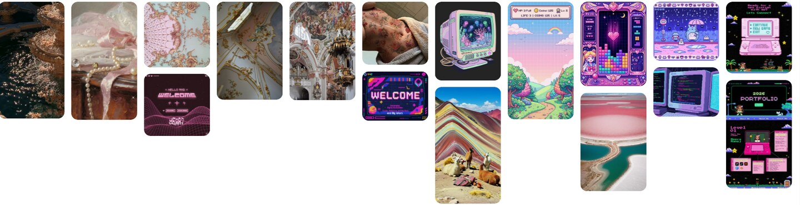

Ornament
Gilding, painted ceilings, pearls, shells and embroidered surfaces bring richness and history.
A PERSONAL TASTE PORTFOLIO
Images, music, objects and ideas that catch my eye. A living portrait, assembled one detail at a time.
Enter the visual archive01 / VISUAL ARCHIVE
A first map of the visual world I’m drawn to: ornament, playful interfaces and places that feel imagined.

02 / SOUND & STORY
Stories, records and artists I return to, and the worlds they leave behind.
This collection is taking shape.
03 / FORM & TEXTURE
Small things with a presence: materials, patterns, interiors and the details that make a place feel alive.
04 / THE VISUAL LANGUAGE
The collection’s mix makes sense when each influence has its own role.
Gilding, painted ceilings, pearls, shells and embroidered surfaces bring richness and history.
CRT glow, tiny characters and pixel menus make the archive feel interactive and alive.
Layered hills, vivid water and dreamlike places turn the collection into somewhere to explore.
05 / ABOUT THIS SPACE
Curator gathers the images, sounds, objects and ideas worth returning to. It treats taste as something discovered by noticing: a personal collection that can change, contradict itself and keep growing.